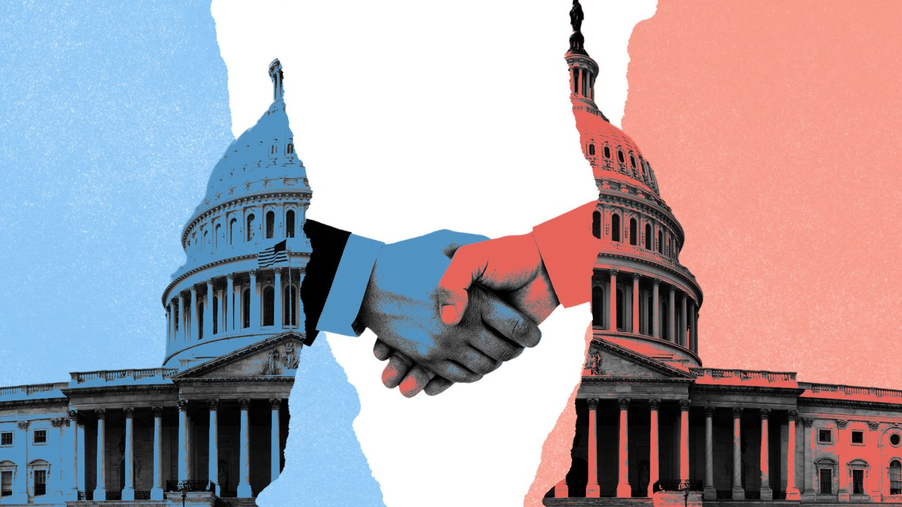
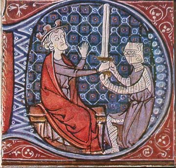

The Goverment
Introduction
Government is one of those things that every society has to figure out in some way. Whether it’s kings, pharaohs, councils, or democracies, people have always needed some kind of system to keep order, make decisions, and deal with problems. How governments work usually tells us a lot about what a culture values—like who gets power, what laws are important, and how leaders are chosen. By looking at how governments were set up in ancient places like Egypt and Mesopotamia, in classical Greece and Rome, during the medieval period, and in modern LDS teachings, we can see how the idea of government has changed over time, but still plays a huge role in how people live.
Egypt & Mesopotamia
In ancient Egypt and Mesopotamia, governments were built around religion and kingship. In Egypt, the pharaoh wasn’t just a king—he was seen as a god on earth. That gave him total authority, and the government’s main job was to keep everything balanced according to Ma’at, which was their idea of cosmic order. Mesopotamia had powerful kings too, like Hammurabi, who made one of the first known law codes. These governments were top-down and very structured. The people didn’t have much say, but they believed their rulers were chosen by the gods, so it gave the whole system a kind of divine approval. Temples and palaces were both political and religious centers, which shows how closely those two parts of life were tied together.
Greece & Rome
When we get to Greece and Rome, things start to shift. Greece is where we first see the idea of democracy, especially in Athens. Citizens (well, male ones at least) could vote and help make decisions about how the city was run. It wasn’t perfect, but it was a big step toward government by the people. Rome started as a monarchy, then became a republic with elected officials like consuls and senators. Later, it turned into an empire with emperors who held most of the power. Both Greece and Rome were interested in law, debate, and civic duty, and their ideas still influence modern governments today. Even when power ended up in the hands of a few, the idea that the people had a role in leadership stuck around.
The Medieval Period
In the medieval period, the government became deeply connected to religion again. In Europe, kings and queens ruled under the idea of the “divine right,” meaning God gave them their power. At the same time, the Catholic Church had a lot of control over people’s lives, which sometimes led to conflicts between church and state. In the Islamic world, the government and religion were also closely linked, with caliphs leading both politically and spiritually. Laws were often based on religious teachings. The average person didn’t get much say in either system, but both Christian and Islamic governments focused on justice, morality, and keeping society in line with religious values.
The Church of Jesus Christ of Latter-day Saints Religious Reflection
In The Church of Jesus Christ of Latter-day Saints, the government is seen as something necessary and even inspired by God, when it's righteous. The Doctrine and Covenants talks about governments being there to protect people’s rights and freedom. There’s a strong focus on agency and accountability, so a good government should allow people to choose and act for themselves. The Church teaches to obey the laws of the land, but also encourages standing up against injustice. The U.S. Constitution is seen as inspired because it protects religious freedom and personal rights. The church's perspective values a government that’s fair, honest, and based on principles like service and equality, not just power.

Conclusion
Governments have always been a big part of how people organize their lives. From god-kings in Egypt to citizen councils in Greece, and from religious rule in the Middle Ages to modern democratic values, governments reflect what people believe about power, justice, and leadership. Each system has its strengths and weaknesses, but all of them show how much humans care about creating order and making life work for their communities. Even today, the way we think about government is shaped by all the ideas and examples that came before us.